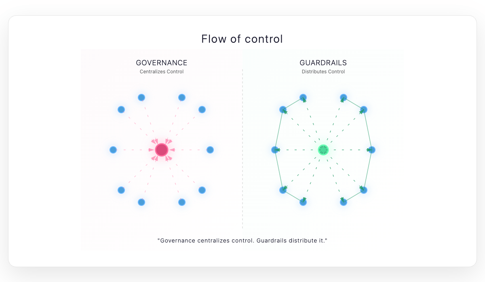

I’ve worked in teams at both ends of the spectrum — teams that follow no governance at all, and teams slowed down by excessive processes. Neither scales well. The right answer, I’ve learned, isn’t more process or less process, but different kinds of control.
As organisations grow, leaders often add process to create predictability. It feels safer — everyone knows what to do, how to deploy, when to ask for approval. But the hidden cost is loss of judgment and agency. People forget they’re supposed to make decisions. They follow the process because it’s easier to justify compliance than to exercise discretion.
Over time, teams move from high-agency, context-rich decision-making to low-agency, rule-following execution. What begins as structure for coordination quietly becomes a substitute for thinking. The system stops rewarding informed decisions and starts rewarding predictable behavior.
What’s needed isn’t the absence of governance, but a different approach to it — one that scales context, not just control. Guardrails — clear principles and automated checks that shape decisions without constraining them — are a way to restore that balance.
This essay explores that shift: from process-heavy governance to context-rich guardrails, and how leaders can design systems that preserve speed, safety, and agency as teams grow.

Control Through Process vs. Control Through Context
Every growing organisation needs mechanisms to keep work aligned and predictable. Early on, that alignment comes naturally — small teams share context, decisions happen in conversations, and corrections are quick. Everyone knows the customer, the product, and the constraints. Control flows through context — people understand enough to make the right calls without asking for permission.
As businesses expand, that shared context starts to thin out. New people join who weren’t there for the early decisions. Teams specialize. Communication becomes asynchronous. Leaders, noticing the growing variability, introduce process to restore consistency. What begins as a sensible attempt to reduce chaos slowly evolves into a system of approvals, templates, and checkpoints — a structure designed to coordinate, but one that can quietly reduce autonomy.
Control through process works by encoding decisions into rules. It’s designed for situations where individual judgment can’t be trusted to be consistent — when context is low, or stakes are high. It provides safety through standardisation. But it also assumes that the people following the process have limited visibility into the “why.” Over time, the process becomes not a support but a substitute for understanding.
Control through context, by contrast, works through shared principles, visibility, and feedback. It assumes competence and seeks to amplify it. Instead of prescribing every step, it gives people the information and intent needed to act wisely within broad boundaries. When teams operate with high context, alignment comes not from approval chains but from a shared sense of what good looks like.
The real challenge for engineering leaders lies in preserving context as scale increases. Governance naturally expands to fill the gaps left by lost understanding. But without deliberate effort to maintain context — through clarity of goals, transparency of data, and strong feedback loops — the organisation slides from trust to control. And when that happens, process stops being a safety net and becomes a constraint.
Why Governance Fails in Growing Teams
Governance rarely begins with bad intent. It usually starts as a way to protect quality and manage coordination when teams multiply. A deployment checklist, a design review template, a ticketing workflow — each new rule is introduced to solve a real problem. But over time, these solutions accumulate faster than the context that once made them necessary.
The first failure mode is process debt — the quiet buildup of outdated or duplicated controls. Each new incident adds another step to the checklist, another approval layer to the workflow. The assumption is that the last failure happened because a process was missing, not because understanding was thin. The result is an organisation where every exception spawns a new rule, but few rules are ever retired.
The second failure mode is loss of ownership. As more decisions are gated by process, teams begin to internalise that their job is to comply, not to think. This shift is subtle but powerful. Engineers and managers stop asking “What’s the right thing to do?” and start asking “What does the process say?” The system rewards adherence over judgment, and over time, even capable people stop exercising agency because the organisation no longer expects it.
The third failure mode is risk aversion disguised as maturity. Governance promises predictability, but what it often delivers is hesitation. When every deviation requires approval and every risk needs documentation, experimentation slows. The organisation becomes safer in appearance, but more fragile in reality — unable to respond quickly when the environment changes.
And finally, governance scales poorly with diversity of work. As systems, teams, and products multiply, a single process model no longer fits all. Rules designed for one context become friction in another. Instead of enabling alignment, governance starts producing exceptions — “this doesn’t apply to us,” “we’ll do it differently.” At scale, governance collapses under the weight of its own exceptions.
In all these cases, the core problem is the same: governance tries to manage lack of context through more control, instead of rebuilding context through transparency and shared understanding. It’s a compensatory mechanism — one that works briefly, but erodes adaptability over time.
What Guardrails Look Like in Practice
If governance is about control through rules, guardrails are about control through design. They don’t ask for approval — they create an environment where the right decision is the easiest one to make.
Guardrails are codified context. They embed principles, feedback, and automation into the system so teams can move fast without losing alignment. Unlike governance, they don’t rely on centralised enforcement; they distribute accountability.
Consider a few examples:
- Automated, not human-gated.
A well-designed CI/CD pipeline is a classic guardrail. It enforces code quality, test coverage, and deployment safety automatically. Engineers don’t need to wait for sign-offs — the system itself provides feedback and blocks unsafe changes. - Principles visible by design.
Instead of publishing policy documents, make operational intent explicit. A simple “production readiness” dashboard communicates expectations better than a PDF checklist. The principle — reliability before release — is preserved, but teams decide how to meet it. - Metrics as boundaries.
Error budgets, MTTR, and deployment frequency targets act as real-time signals. They tell teams when they are drifting out of safe bounds, not after the fact but as it happens. Guardrails are designed to make mistakes visible early. - Decision gradients.
Not every decision needs escalation. By defining which choices are reversible and which are not, leaders can delegate confidently. Teams operate freely within their gradient, escalating only when risk or irreversibility increases. - Culture of reversibility.
Fast decisions are safe when rollback is easy. Guardrails often include strong recovery mechanisms — feature flags, automated rollbacks, clear post-incident paths. The emphasis shifts from “never break” to “recover quickly.”
The power of guardrails lies in how they scale trust. Governance scales by adding oversight; guardrails scale by adding context and feedback. In an effective engineering organisation, people don’t wait for permission — they operate within clear, observable boundaries and correct course when signals indicate drift.
Building such systems requires design intent. Guardrails must be visible, adjustable, and explainable. They should evolve as the organisation learns, tightening or loosening in response to real data. When done right, they become the invisible infrastructure of autonomy — allowing teams to move fast and stay aligned.
Designing Guardrails
Designing effective guardrails isn’t about adding more tools or policies. It’s about translating organizational intent into systems that preserve judgment while providing safety. The goal is not to prevent mistakes, but to make it easy to notice and correct them.
The first principle is guardrails are codified trust. They assume people want to do the right thing and simply need clarity on what “right” means. When you design guardrails, start from a position of trust, not suspicion. The intent is to guide, not to police. If people feel they’re being watched, the system will produce compliance. If they feel they’re being trusted, it will produce accountability.
The second principle is design for context, not control. Every process, dashboard, or policy should answer a single question: does it increase or reduce the context available to the person making the decision? Guardrails should make the “why” visible — through metrics, documentation, observability, or shared principles — so decisions can be made locally with confidence.
The third principle is evolution, not enforcement. Guardrails are living systems. They need regular feedback loops to know when they’ve become too restrictive or too loose. For instance, if teams are constantly asking for exceptions, the constraint might be misaligned with reality. If incidents are frequent, perhaps the guardrail isn’t tight enough. The role of leadership is to listen, tune, and adjust — not to set once and forget.
Finally, keep them transparent and explainable. Teams should understand why a guardrail exists, not just that it does. Hidden rules breed frustration; visible principles build alignment. An observability system that flags anomaly thresholds without explaining the reasoning only teaches people to ignore alerts. When context is shared, feedback becomes actionable.
The essence of guardrail design is empathy — for the people making decisions, and for the system that must stay safe as they do. When leaders design with that empathy, they create organisations where trust and control reinforce each other, rather than compete.
The Role of Leadership
Leadership is the real differentiator between organisations that grow with agility and those that grow into rigidity. The same processes, when introduced under different philosophies, can either empower or constrain. What makes the difference is how leaders think about control.
The instinct to add governance often comes from a good place: a desire for quality, predictability, and risk management. But leaders who rely solely on process tend to treat it as a substitute for communication. The more distant they feel from the ground, the more rules they create. The problem isn’t distance — it’s opacity. When teams can’t see the intent behind a decision, they fill the gap with compliance.
The leader’s role, then, is not to write more rules, but to preserve shared understanding. Context is a perishable resource; leadership’s job is to constantly replenish it. That means making strategy, metrics, and constraints visible and discussable. When people understand why something matters, they rarely need to be told how to do it.
Leaders also act as stewards of autonomy. Their goal is not to prevent failure, but to make recovery fast and learning continuous. In such systems, mistakes are treated as feedback, not as evidence of negligence. This mindset encourages experimentation — the foundation of improvement. A leader who insists on never failing ends up with a team that never learns.
Another responsibility of leadership is to replace approval with context-sharing. Instead of being a checkpoint, the leader becomes a multiplier of clarity. The best sign-offs happen before the decision, not after it — through transparent priorities, well-framed constraints, and open access to information. Once context is shared, the need for permission drops sharply.
Finally, trust compounds faster than policy. Every time a team exercises judgment responsibly, the organisation becomes a little more self-regulating. Every time a leader overrides that judgment in favour of process, it becomes a little less so. Over time, this determines whether your company grows into a learning system or a permission system.
Leadership, in this view, is not about writing the rules of engagement — it’s about designing the conditions under which people can use their judgment well. The most scalable organisations are the ones where context flows freely, trust is visible, and processes serve as quiet safety nets rather than loud gatekeepers.
Outcomes of Guardrail-Driven Organizations
When organisations make the shift from governance to guardrails, the most noticeable change isn’t in the number of processes — it’s in the quality of decisions. Teams begin to act with more intent. They don’t move faster because someone told them to; they move faster because they understand what matters and where the safe boundaries lie.
The first outcome is velocity with safety. Guardrails don’t eliminate risk, but they make it visible and manageable. Engineers deploy confidently because rollback is easy. Product teams ship often because feedback is immediate. The system allows experimentation without recklessness — and that balance sustains long-term speed.
The second outcome is shorter learning loops. When signals are embedded in the system, feedback arrives in real time. Teams don’t need postmortems to understand what went wrong; they can see it as it happens. This shift — from retrospective learning to continuous correction — turns reliability into a daily practice rather than a quarterly audit.
The third is stronger ownership. When people have both context and autonomy, they start thinking like system owners, not task executors. Accountability grows naturally, not through enforcement but through connection to outcomes. Teams feel responsible for their impact because they can see it and influence it directly.
The fourth is resilience over compliance. Guardrail-driven systems recover quickly because they’re designed for reversibility and adaptation. Governance-based systems, in contrast, tend to freeze under stress — every exception requires approval, every deviation feels like failure. Guardrails treat change as normal, not as risk.
And finally, cultural cohesion. In high-context organisations, alignment doesn’t come from rules; it comes from shared understanding. People may disagree on tactics, but they rarely diverge on intent. That clarity of intent — consistently reinforced through transparent systems — is what makes an organisation feel coherent even as it scales.
In the end, guardrails aren’t just a design choice; they’re a cultural signal. They tell people: we trust your judgment, and we’ve built the system to help you use it well. The more that trust compounds, the less governance you need — not because the work gets simpler, but because the organisation gets smarter.
Scaling Context, Not Control
Every system drifts toward more governance as it grows. It’s an understandable response to complexity — when coordination feels harder, adding structure feels like progress. But structure alone doesn’t scale judgment. Only context does.
As teams expand, what leaders really manage is the rate of context decay. Every new layer, every new tool, every new team adds distance between intent and action. Governance tries to close that gap with control. Guardrails close it with clarity.
The question for any engineering leader, then, isn’t how much process is enough — it’s how much context can we preserve? The organisations that scale well don’t avoid process; they design it to inform, not to instruct. They make principles visible, automate feedback, and trust people to act wisely within clear bounds.
That’s what guardrails really are: systems built on the assumption that people can be trusted with good information. And when that assumption holds, governance becomes quiet, culture becomes visible, and decisions start flowing at the speed of understanding.